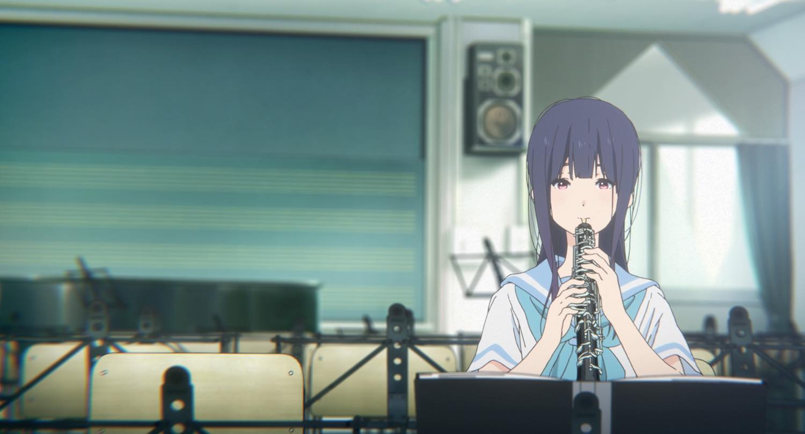
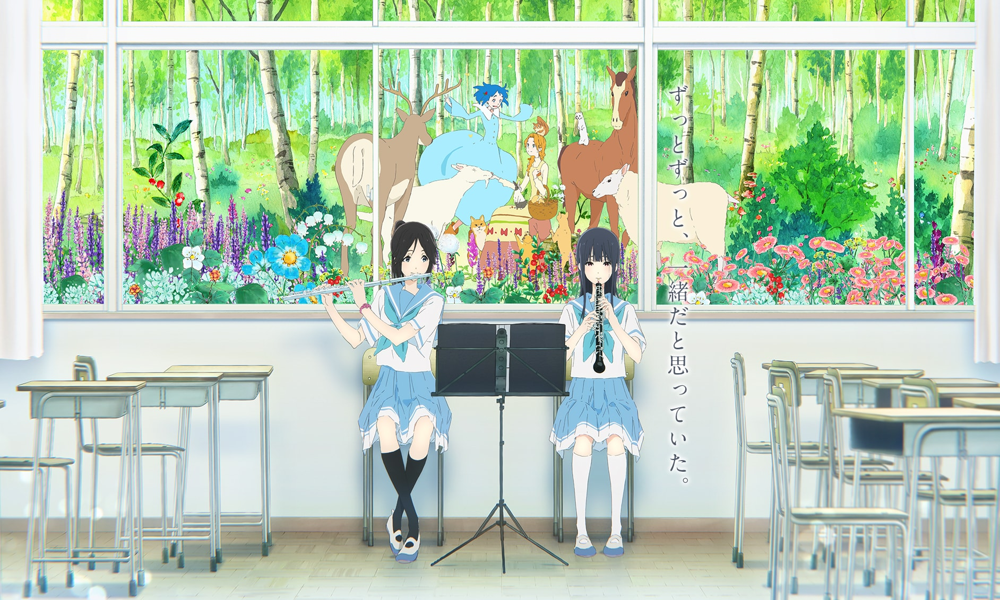
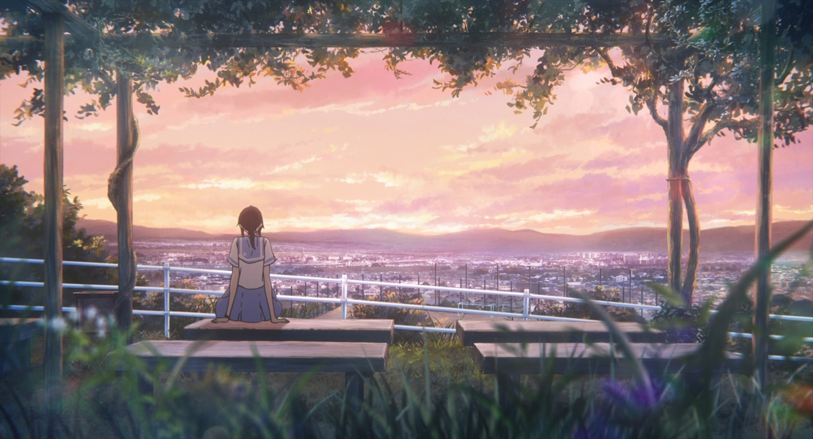
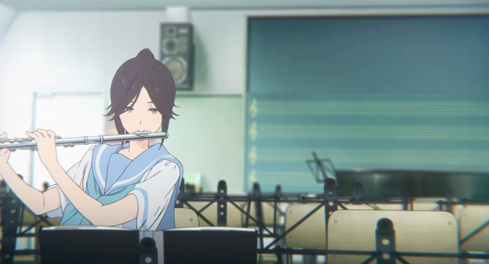
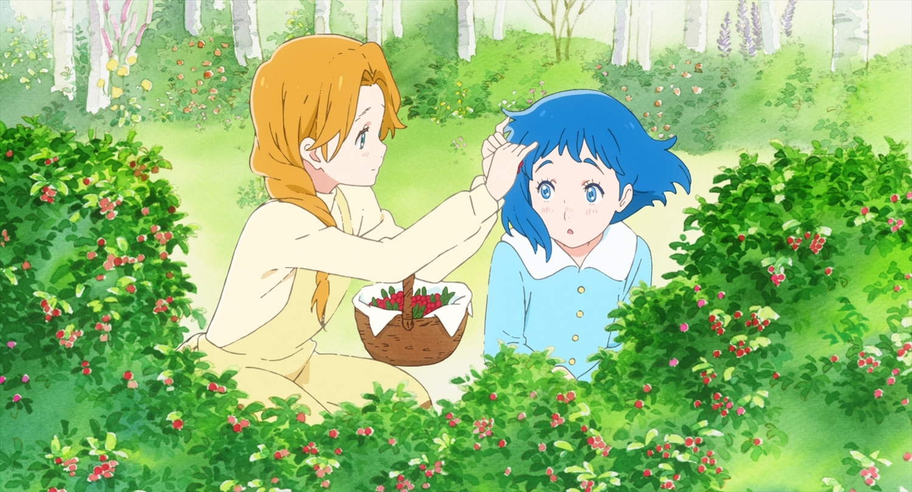
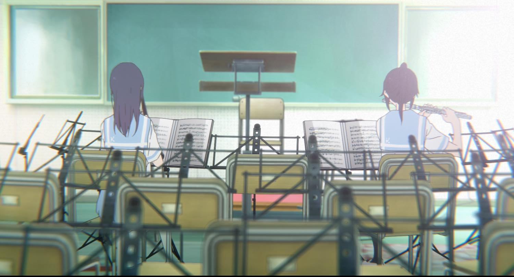
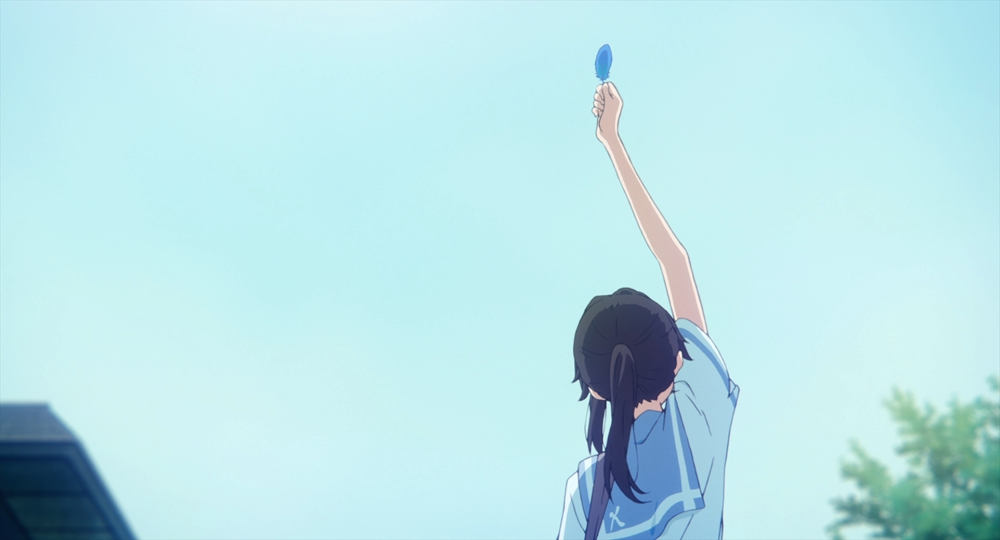

双簧管 OBOE
铠塚霙鎧塚みぞれ
安静而不善表达，拥有出色的双簧管演奏能力。中学时，希美主动向独来独往的她搭话；从那以后，希美成为她生活中最重要的人。她很珍惜两人相处的日常，却也始终害怕它会结束。
声优 / 种崎敦美

A FILM BY NAOKO YAMADA KYOTO ANIMATION · 2018
A STORY IN SOFT NOTES
铠塚霙负责双簧管，伞木希美负责长笛。升入高三，两人即将迎来高中最后一次吹奏乐比赛。自由曲选定为《利兹与青鸟》，其中有一段双簧管与长笛相互应答的独奏。一起上学、一起练习的日子仍在继续，但对霙来说，毕业也意味着必须面对与希美分开的可能。
这部电影取材于武田绫乃的《吹响！上低音号》，把视线集中在霙与希美的关系上。校园里的练习与童话中的相遇交替出现：独居湖畔的利兹遇见一位神秘少女，两人的生活由此改变。霙与希美把自己放进这个故事，也在演奏中尝试理解彼此。电影由京都动画制作，山田尚子执导，吉田玲子编剧。
故事发生在北宇治高中吹奏乐部，两位少女的高中三年级。

OBOE / FLUTE
她们总是一起，却有着各自感受世界的方式。

双簧管 OBOE
安静而不善表达，拥有出色的双簧管演奏能力。中学时，希美主动向独来独往的她搭话；从那以后，希美成为她生活中最重要的人。她很珍惜两人相处的日常，却也始终害怕它会结束。
声优 / 种崎敦美

长笛 FLUTE
明朗、活跃，喜欢音乐，也有许多朋友。她与霙来自同一所初中，曾在高一退部，又在高二回到吹奏乐部。重返练习室后，两人重新一起演奏；但希美对这份友情的理解，与霙并不完全相同。
声优 / 东山奈央
双簧管与长笛，在合奏里相遇。
彼此的音色，也映出那些难以说清的心情。
TWO WORLDS, ONE MELODY

THE FAIRYTALE
独自住在湖边的利兹，在暴风雨之后遇见一位神秘少女。她们一起生活，分享每天的小事。柔软的水彩、绿色的森林与蓝色的羽毛，让这段相遇拥有童话的质地。

THE SCHOOL
霙与希美正在练习的自由曲，同样名为《利兹与青鸟》。童话里的牵挂，渐渐与校园里的心情重叠。双簧管与长笛轮流发声；面对同一个故事，两人也在寻找各自的答案。
一部作品里的两种画风，两段故事里的同一份牵挂。
VIEWING NOTES / 观影解读
这些声画细节，是走近故事的几条线索。
两人并肩行走时的步速、视线与停顿，可以当作理解关系的线索：谁在追随，谁在等待，谁先转过身。对话没有说出的部分，常常留在这些细小动作里。观看时不妨暂时把注意力从台词移向身体之间的距离。
双簧管与长笛的独奏并非只有音准与技巧的问题。相互应答的乐句，也可以听成两人试图靠近对方的过程；呼吸、进入时机与音色，让情绪拥有了台词以外的出口。这里的演奏既是练习，也是人物之间的交流。
配乐把注意力延伸到人物周围的空间。山田尚子在官方访谈中提到，牛尾宪辅曾到学校采集墙壁、玻璃等物件的声音。把这些声音与走廊、教室的画面放在一起听，日常环境仿佛也在回应两人的情绪；校园与童话因而呈现出不同的听觉触感。

MUSIC & FILM
电影配乐、童话与吹奏乐曲，各自留下不同的色彩。
曲目链接通往官方音乐与唱片介绍。
THE PEOPLE BEHIND THE FILM
COLLECTED FRAMES
来自原作的校园、童话与绘图。
10 幅画面
点开画面，可放大查看并找到原始出处。
リズと青い鳥
把未说出口的，留在旋律里。